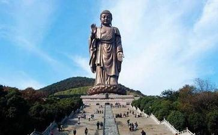

俗语说：“种瓜得瓜，种豆得豆。”“善有善报，恶有恶报，不是不报，时辰未到，时辰一到，马上就报”等等都表明了因果报应的基本内涵。古今中外，无数圣贤哲人无不提倡因果报应。古代希腊哲学家柏拉图在其不朽名著《理想国》一书中说：“凡人在世有一罪者，在死后受十倍的惩罚；凡人在世公道而勇敢者，在死后每一项亦受十倍之报酬。”17世纪法国思想家伏尔泰(Voltaire)非常排斥迷信，却也坚决相信善恶的因果报应。“一个赏罚分明的上帝是必需的……如果大家都不信神，这个社会还能维持得住吗？”《涅槃经》云：“善恶之报，如影随形，三世因果，循环不失。”儒家《易经》云：“积善之家，必有余庆；积不善之家，必有余殃。”《尚书》云：“天道福善祸淫”，“唯上帝不常，作善降之百祥，作不善降之百殃。”曾子也说：“人之为善，福虽未至，去祸远矣；人之为恶，祸虽未至，去福远矣。”道家《太上感应篇》云：“祸福无门，惟人自召；善恶之报，如影随形。”周安士曰：“人人知因果，大治之道也；人人不知因果，大乱之道也。”近人梁启超也说：“佛教说的‘业’和‘报’是宇宙间的唯一真理。”并强调说，“我笃信佛教，就在此点，七千卷《大藏经》也只说明了这点道理。”印光法师则针对世道人心，日趋日下之时弊，大声疾呼：“道德仁义，乃吾人本具之性德；因果报应，实天地化育之大权。”在民间，则有更多关于因果报应的迷信传说。但是，中国佛教的因果报应理论既不同于西方的因果报应观念(借助于上帝的奖惩)，也不同于中国固有的因果报应观念(多限于一世因果)，还不同于印度佛教的因果报应理论(具有较为严格的戒律性、个体性、出世性和精神性)，中国佛教的因果报应理论具有自己所特有的理论特色，成为中国文化的一大景观。本文试图从理论特色方面入手，在同印度佛教因果报应理论进行比较的过程中，运用历史唯物主义的方法，对中国佛教因果报应说的理论特色进行归纳和整理，以供同仁们进行自己的价值取舍，进而起到抛砖引玉的效果。
一、戒律性与伦理性相融合
印度佛教因果报应理论具有较为严格的戒律性。佛教认为，众生之所以陷于六道轮回，辗转往复而不能出离，根本原因在于“贪、瞋、痴”三毒，为此佛教提出“戒、定、慧”三学对治“贪、瞋、痴”三毒，以戒止贪，以定伏瞋，以慧除痴。戒者，止恶生善义，是定、慧的基础，也是道德的根本。有戒则众善具备，无戒则诸恶生起，不仅出家人要持戒，在家人也应持戒，一切众生都应持戒。戒，从形式上看，有五戒、八关斋戒、十善、沙弥戒、比丘戒、菩萨戒等；从内容上看，有小乘戒和大乘戒之分。小乘戒，从事相上戒，严持戒侓，心起恶念，但事相上没做，不算犯戒，即“论事不论心”；大乘戒，从起心动念处戒，心起恶念，不管事相上做与没做，都算犯戒，即“论心不论事”，所以大乘戒比小乘戒更难持守。在佛教的众多戒律之中，五戒、十善是根本戒，是佛教其他一切戒律的基础。
五戒是：
1、杀戒
杀是以断灭众生生命为性。杀戒包括不杀所有一切动物，这是培养人的慈悲心、清净心，因为杀害生命，就具足“贪、瞋、痴”三毒。有自杀、教人杀、见杀、随喜之分。因果报应诸事理中，杀业之报最重。杀是造成大难的根源。
2、盗戒
盗是以不与而取为性。盗戒的范围非常广，也很细微，相当不容易做到。“偷盗”，佛经上的解释是“不予取”。即人家的东西不给，我私自取来，或强制取来，或偷取得来。
3、邪淫
戒淫是以侵犯他人贞节为性。出家受大戒者，不但不能邪淫，连一切淫欲都不能犯。
4、妄语
戒妄是以欺诳不实为性。“妄”是欺骗。所说的话不真实，此有两种情形：一是存心骗人，另一种是道听途说，也属于妄语。事实真相没搞清楚，听别人说的，是谓谣言。话愈传愈讹，愈传愈与事实不符，这是妄语。
5、饮酒
戒酒是以乱性失神为性。五戒，前四条：杀、盗、淫、妄是属于“性罪”，也就是盖覆自己的本性。酒是“遮戒”，不是性戒，本身没有罪，是喝醉后犯了前面四条戒才有罪，不犯前面四条戒，则没有。佛教把酒作为根本大戒，是因为喝醉之后迷惑颠倒，不能控制自己，决定破戒。所以酒是防患，本身没有过失。前面四条，受戒犯了是有罪的；不受戒，犯了还是有罪的。
“十善”即：(1)不杀生；(2)不偷盗；(3)不邪淫；(4)不妄语；(5)不恶口；(6)不两舌；(7)不绮语；(8)不贪欲；(9)不瞋恚；(10)不愚痴。
“十善”与“十恶”相对应，“十恶”是指：(1)杀生；(2)偷盗；(3)邪淫；(4)妄语；(5)恶口(说话粗鲁)；(6)两舌(挑拨是非)；(7)绮语(花言巧语)；(8)贪欲；(9)瞋恚；(10)愚痴。
中国文化早在西周春秋时期就具有鲜明的伦理特色，秦汉以后，形成了以五常(仁、义、礼、智、信)为中心内容的伦理道德体系。佛教在与中国传统伦理道德文化相冲突的过程中，逐渐与中国传统伦理道德文化相融合。《盂兰盆经疏》云：“发于仁者则不杀，奉于义者则不盗，敬于礼者则不淫，说于信者则不妄，师于智者则不酒。”近人圆瑛法师也说：“不杀仁也，不盗义也，不邪淫礼也，不妄语信也，不饮酒智也。”中国当代的净空法师在《佛说大乘无量寿庄严清净平等觉经讲记》中说，佛教的戒律可分为三大类，第一类是律仪戒，即经典里有记载的戒条；第二类是摄善法戒，就是对一切有情众生有利的世间善法；第三类是饶益有情戒，只要对众生有利益的，能保障社会大众安全的，像国家法律、一切规章、风俗习惯、道德观念等。后两类虽是佛经里没有的，但都应属于佛教的戒律，因为佛教戒律的精神是“诸恶莫做(小乘戒)，众善奉行(大乘戒)”，凡是符合这种精神的，都是佛教戒律。在这里，净空法师实际上对佛教戒律的范围作了扩展，将中国传统的伦理道德体系纳入了佛教的戒律之中。以上表明了中国佛教因果报应说具有戒律性与伦理性相融合的理论特色。
二、个体性与家族性相兼顾
印度佛教的因果报应理论具有严格的个体性，完全是自作自受，自己造因，自己受果，不会给家庭、家族带来报应，给子孙带来祸福。郗超援引《泥洹经》说：“父作不善，子不代受；子作不善，父亦不受。善自获福，恶自受殃。”然而，中国儒家《易经》云：“积善之家，必有余庆；积不善之家，必有余殃。”个人所作所为会给自身、家庭、家族带来报应，给子孙后代带来祸福。“儒学世家出身的颜之推在《颜氏家训-归心》中也肯定子孙报应，告诫家人，不要杀生，原因是好杀之人，临死报验，子孙殃祸，其数甚多。”早期道教发展了这一思想，提出“承负说”，意思是先人做善恶之事，不仅本人连其子孙后代也要负担责任，遭受报应。这样一来，印度佛教因果报应的个体性、自作自受性与中国传统因果报应的家族性、承负性发生了冲突，产生了逻辑上难以并存的矛盾。如何解决这一矛盾？是坚持因果报应的严格的个体性、自作自受性，不接纳因果报应的家族性、承负性，还是对因果报应理论做出新的解释以兼顾因果报应的家族性、承负性，是中国佛教面临的抉择，中国佛教为了自身的发展不得不选择了后者，即对印度佛教因果报应的理论做出新的解释，以兼顾因果报应的家族性、承负性。近人梁启超在《余之死生观》中说：“个人之羯磨(意译作‘业’)，则个人食其报；一家之羯磨，则全家食其报；一族一国乃至一世界之羯磨，则全族全国全世界食其报。由此言之，则言家族之余庆余殃者，于佛说岂有违异乎？”他说，各自作业(别业)，各自食报，集体作业(共业)，集体食报，从这个角度而言，因果报应的家族性、承负性并不违背因果报应的个体性、自作自受性，于佛说没有违异，从而把中国与印度佛教的因果报应观念协调起来，即把因果报应的个体性与家族性相兼顾。因此，“积善之家”，因为集体作业(共业)，所以集体受报“必有余庆”；然而，如果其子孙不再行善(别业)，则以后便可能产生“家道中衰”的现象。同理“积不善之家”因为集体作业(共业)，所以集体受报“必有余殃”。然而，如果其子孙不再“不善”(别业)，则以后便可能出现“家道中兴”的现象。所以，各种遭受或报应，可以说俱属自作自受，咎由自取。中国佛教运用别业与共业的理论很圆融地解决了因果报应的个体性与家族性在逻辑上原本是不能并存的矛盾，将中国传统的因果报应的家族性纳入了佛教的因果报应理论体系，从而有利于佛教在中国的生存与发展。
印光法师在其《文钞》里，举了中国历史上三个因果报应兼顾家族性的事例。“中国自古至今，在历史上有三位了不起的人物。第一位是孔夫子，一生积功累德之厚，他的子孙一直到今天都还受到社会广泛的尊敬，此是祖宗之德。孔德成先生到美国，美国人听说他是孔夫子的后代，特别礼遇他，他沾祖宗的光。第二位就是范仲淹先生。读范仲淹的传记，或《古文观止》里的《义田记》，我们看到他一生行持，丰功伟绩，出将入相。国家动乱的时候，他是大将军，统帅；回到朝廷里，他是宰相。国家给他的俸禄丰厚，他自己省吃俭用，将自己的俸禄养活三百多家，兴办义学。他看到穷人家的子弟有可以造就的，都找来念书，供养他们，替国家培养人才不为自己，所以果报殊胜。他有五个儿子，其中有两个官做到宰相，有一个做到御史大夫。他死的时候买不起棺材，钱到哪里去了？都做好事，布施了。所以，范家一直到民国初年，八百多年，家道不衰。第三位是清初的叶状元，也是世代积功累德，一直到清朝末年，三百年家道不衰。”中国当代的净空法师也在《佛说大乘无量寿庄严清净平等觉经讲记》中，解释了因果报应兼顾家族性的道理。他说，“先辈行善是善缘，子孙行善是善因，因缘会聚，果报自然现前。”